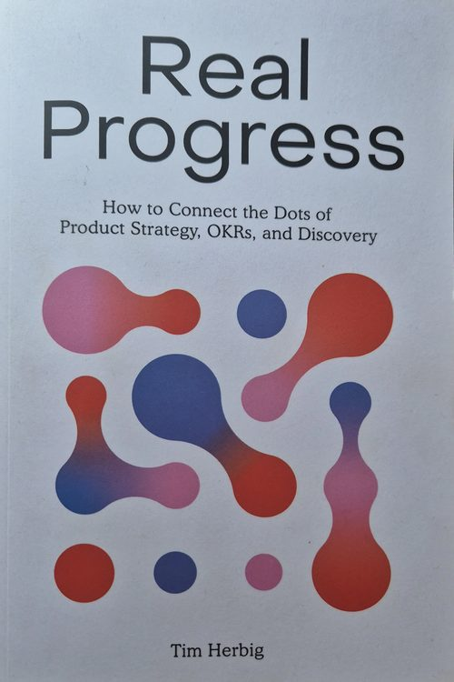
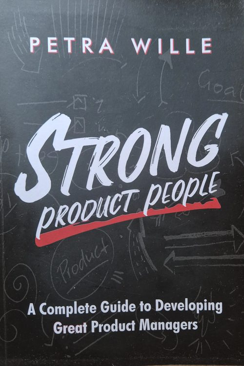
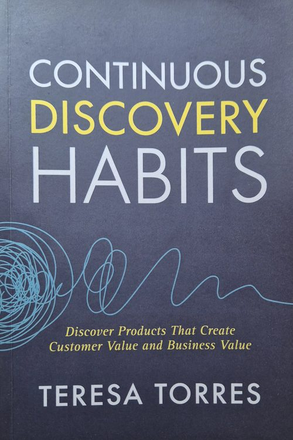
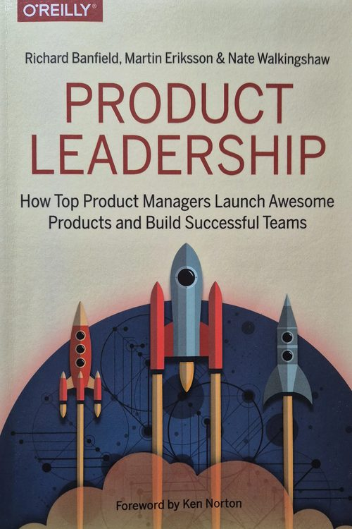
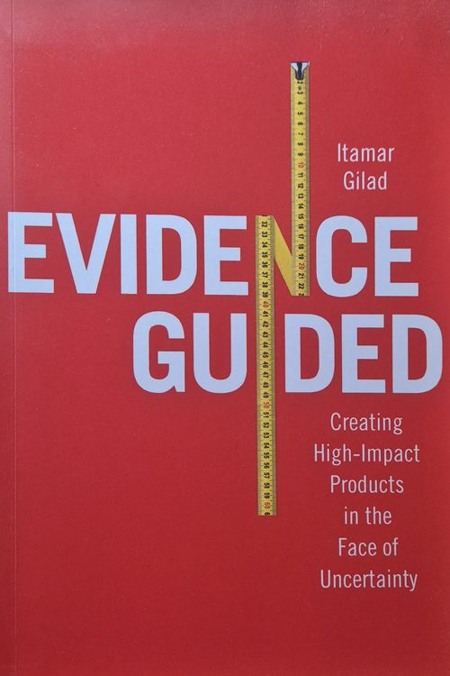

Ericpol
Software developerAs a freshly minted telecommunications engineer, I developed and tested software for GSM and WCDMA networks. The bar was scalability, reliability and strict standards compliance, and I learned to respect all three.
Product leader · León & Madrid
Engineer by training, bridge by nature, product leader by choice. My story runs from mobile networks to global banking to video games, and it's told in three acts.
Start the storyAct one · 2009–2015
I started inside the machine, writing the code that makes mobile networks work. Then I stepped out of it to see the business around it.
As a freshly minted telecommunications engineer, I developed and tested software for GSM and WCDMA networks. The bar was scalability, reliability and strict standards compliance, and I learned to respect all three.
I moved from building networks to buying them. I managed procurement for international VPN solutions and learned how regulation, vendors and contracts shape what technology is even possible.
I analysed, designed and configured changes to telecom CRM systems for global clients, and helped them adopt cloud tools. This is where I saw that technology only matters once people actually use it.
"I learned how networks are built before I learned how products are sold."
Act two · 2015–2018
Between what a business asks for and what engineers build, there's a gap. I learned to close it, and to add value on the way across.
I aligned the CRM, Sales and Marketing modules into one customer lifecycle, and ran Agile workshops where business and tech defined SaaS requirements together, in the same room.
I was the subject-matter expert on an e-commerce platform for a leading US cloud distributor. I shaped how the cloud pieces fit together and helped the business actually adopt the system.
"The value isn't in the code or in the request. It's in the connection between them."
Act three · 2018–now
Now I decide what's worth building, and I help teams change how they work to build it.
One bank, one experience.
Every country built its own version of the same products. A customer in BBVA Peru and one in BBVA Mexico got different layouts and different experiences.
We built a globalization framework covering one global definition, design, set of APIs and implementation. Local differences were kept only where each country's laws required them, and a global committee coordinated how teams planned, built and evolved products.
More than a framework, it became a global mindset. Teams across countries started working as one.
Governance came to depend on senior management decisions, so teams often had to wait before they could act. I also wanted a new challenge in a new industry.
From banking to games.
Localization testing means reviewing every piece of game content in every language. It's slow and expensive, and teams spend hours hunting warnings and errors by hand.
I'm bringing in a new tool that uses AI trained on game data, so teams can review content and catch warnings and errors much faster.
It's designed to avoid costs and raise ROI. Just as important, teams are rethinking their processes and how they work together to get the most out of it.
This chapter is still being written.
"Whether it's a bank across countries or a game across languages, the hard part isn't the tool. It's helping people work differently."
I'm a product manager with over a decade of experience driving digital transformation and building products that improve how teams work with complex systems and content.
Today my work focuses on using AI and automation to speed up validation workflows, so teams can make faster, better-informed decisions. I use these tools in my own day-to-day too, with Claude Code and n8n automating backlog management, stakeholder updates and release notes.
I trained as a telecommunications engineer at the Universidad de Sevilla, and I've lived and worked in Poland, Barcelona and Madrid.
A telecommunications engineer who can sit with developers and talk architecture, APIs and trade-offs.
Aligning business, compliance, users and engineering across countries and time zones.
Roadmaps, MVPs and KPIs that keep the team focused on what's actually worth building.
Tools don't change companies; people do. I help teams adopt new ways of working, not just new software.
Bookshelf

Tim Herbig

Petra Wille

Teresa Torres

Richard Banfield, Martin Eriksson & Nate Walkingshaw

Itamar Gilad
Next chapter